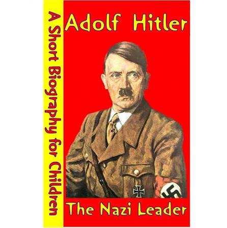

¿Quién fue?
Adolf Hitler fue el líder del Partido Nazi y dictador de Alemania entre 1933 y 1945. Su gobierno instauró un régimen totalitario, racista y represivo.
Leer biografía →Conoce el contexto histórico del régimen nazi, su ascenso al poder, sus crímenes y las consecuencias que marcaron al mundo.
Explorar historiaAdolf Hitler fue el líder del Partido Nazi y dictador de Alemania entre 1933 y 1945. Su gobierno instauró un régimen totalitario, racista y represivo.
Leer biografía →El régimen promovió el antisemitismo, la persecución, la propaganda y la eliminación de libertades, con consecuencias devastadoras.
Conocer acontecimientos →
Estudiar este periodo permite comprender los peligros del odio, el autoritarismo, la discriminación y la deshumanización.
Ver galería →El estudio de la historia ayuda a reconocer las consecuencias de la intolerancia, el racismo y la violencia política.
Conocer acontecimientosNacimiento de Adolf Hitler en Austria.
Hitler llega al poder como canciller de Alemania.
Caída del régimen nazi y final de la guerra en Europa.
Puedes sustituir el enlace por un video documental de una fuente educativa.